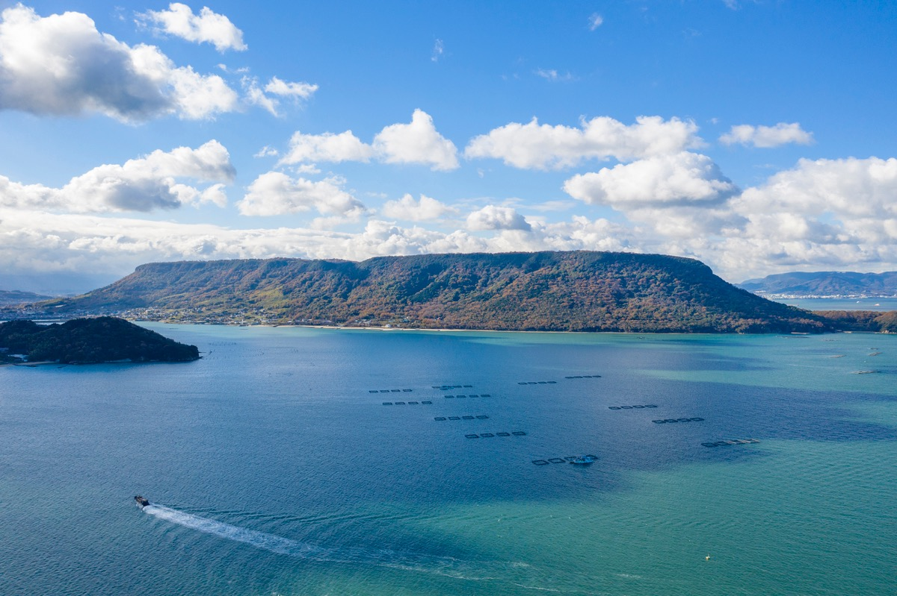
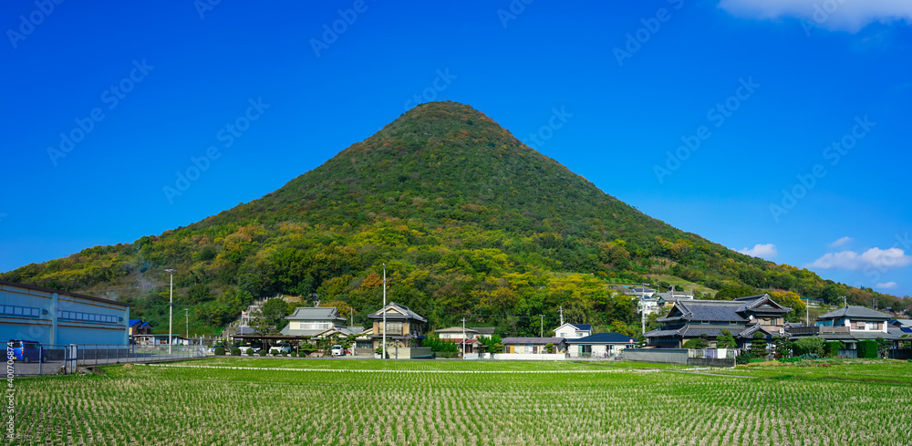
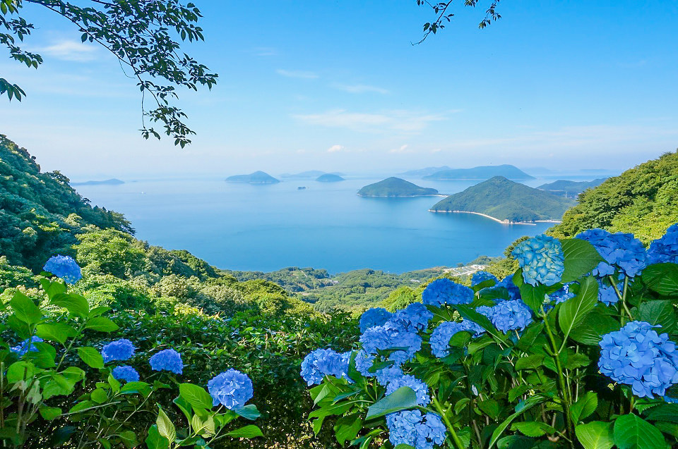

山頂の展望台からは瀬戸内海や高松市街を一望できます。 源平合戦の古戦場としても有名で、歴史と景色の両方を楽しめます。
最寄り駅：JR屋島駅
徒歩：約30分
住所：香川県高松市屋島東町

美しい円すい形が特徴で「讃岐富士」と呼ばれています。 登山初心者でも登りやすく、山頂からは讃岐平野を見渡せます。
最寄り駅：JR坂出駅
徒歩：約40分
住所：香川県丸亀市飯山町・坂出市

春には桜と瀬戸内海の景色を同時に楽しめる絶景スポットです。 展望台から見る多島美は香川県を代表する景色として人気があります。
最寄り駅：JR詫間駅
徒歩：約90分
住所：香川県三豊市詫間町大浜